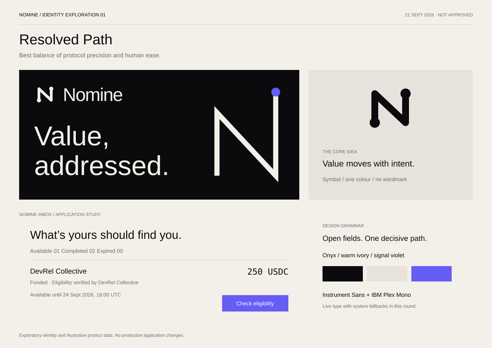
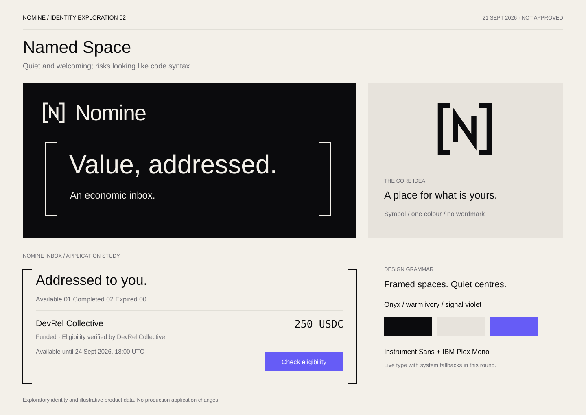
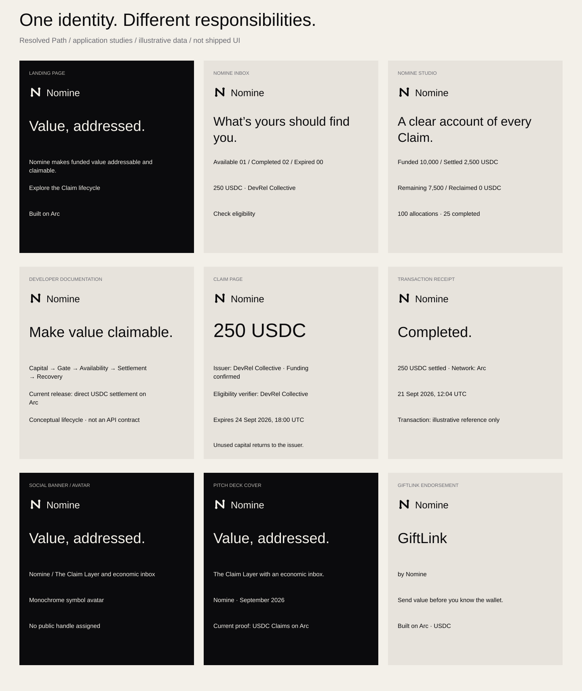
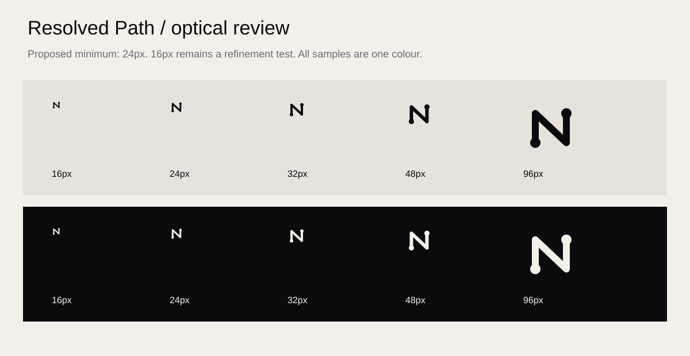

01 / Resolved Path

A continuous N resolves issuer and destination. Best balance of protocol precision and human ease. Editable lockup · Editable symbol
02 / Named Space

Address brackets hold a named entitlement. Quiet and welcoming; risks looking like code syntax. Editable lockup · Editable symbol
Applications / Resolved Path

These are brand composition studies, not complete interface specifications. Product data is illustrative. All nine use the same parent identity; Arc and USDC appear as contextual text.
Small sizes and one colour

The 24px version is the provisional minimum. The 16px drawing needs optical refinement before favicon approval. Calculated contrast report.